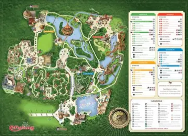
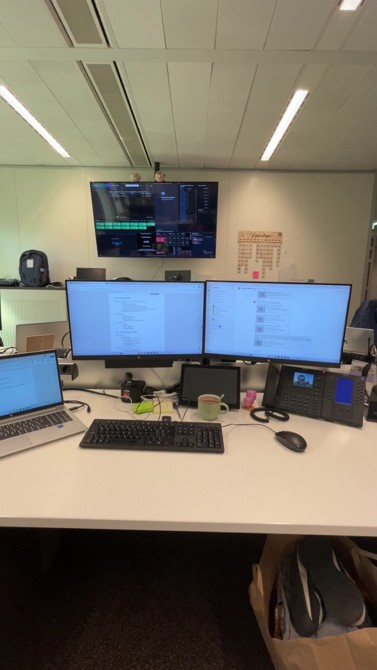
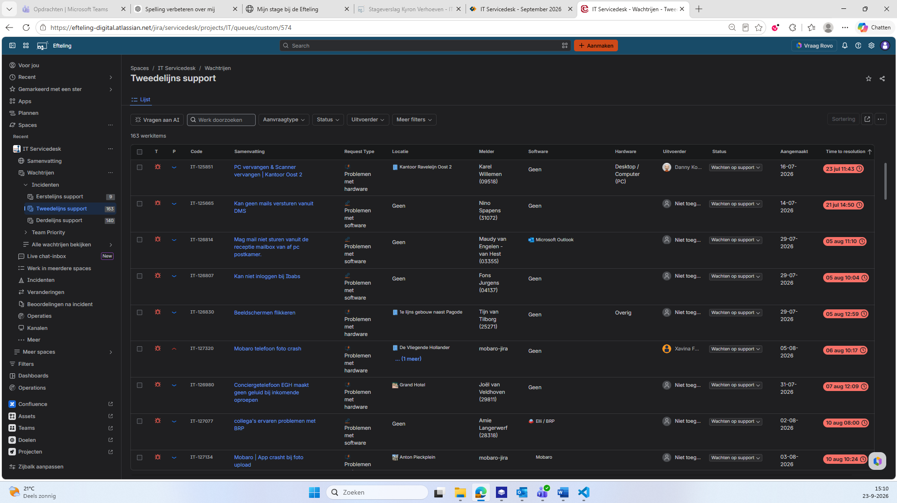
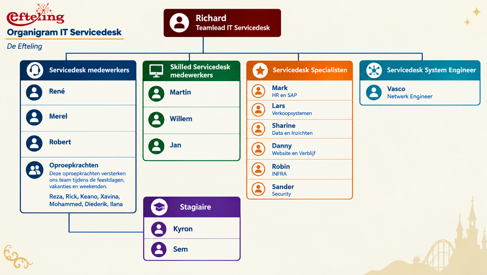

Welkom op mijn stagewebsite. Op deze website vertel ik meer over mijn stage bij de Efteling en mijn werkzaamheden binnen de IT Servicedesk.
Ik ben Kyron Verhoeven en ik ben 19 jaar (09-06-2007). Ik kom uit Tilburg en woon in de Reeshof samen met mijn vader en stiefmoeder. Mijn moeder woont in Gilze samen met mijn stiefvader en 2 broertjes. Ik loop hier het komend jaar stage bij jullie omdat ik de opleiding ICT Support Technician MBO 3 volg op Yonder Kasteeldreef in Tilburg. Verder vind ik het leuk om met mijn vrienden dingen te gaan doen. We gaan vaak naar festivals zoals (Decibel, Intents en Rebirth). Verder houd ik ervan om een serietje op Netflix te kijken of te gamen met mijn vrienden. Waar ik me verder in mijn vrije tijd nog op focus, is het leren van muziek produceren. Hier ben ik pas mee begonnen en vind ik erg interessant en leuk om te doen.
•Mijn stageplek: Ik loop stage bij de Efteling, op de afdeling IT Servicedesk. Omdat de Efteling een groot attractiepark is, komt er bij mijn stage veel meer kijken dan alleen de standaard ICT-werkzaamheden. De IT-afdeling ondersteunt namelijk een groot deel van het park en zorgt ervoor dat verschillende technische systemen goed blijven werken.

•Mijn werkplek bevindt zich niet op een vaste locatie. Ik werk vanuit de IT Servicedesk, maar mijn werkzaamheden kunnen door het hele park plaatsvinden. Wanneer er ergens in de Efteling een technisch probleem is, ga ik naar de gegeven locatie om het probleem te onderzoeken en op te lossen. Een voorbeeld hiervan is wanneer een kassa bij een eetkraam bijvoorbeeld niet werkt. In dat geval ga ik naar de locatie toe om te kijken wat het probleem veroorzaakt en probeer ik dit zo snel mogelijk op te lossen. Hierdoor is mijn werkplek eigenlijk het hele Efteling-park en krijg ik te maken met veel verschillende situaties en ICT-systemen.

De werkzaamheden op mijn afdeling IT Servicedesk zijn elke dag verschillend. Tot nu toe start ik mijn dag meestal op de Servicedesk zelf. Hier ga ik achter mijn bureau zitten, start ik mijn laptop op en zet ik alles klaar om aan de slag te gaan. Op de Servicedesk werken medewerkers aan de tickets die binnenkomen. Wanneer het nodig is, gaan we vanuit hier ook het park in om problemen op locatie op te lossen.
Binnen onze afdeling zijn er drie verschillende plekken waar je je werkzaamheden kunt uitvoeren. Eén daarvan is de Servicedesk.
Zo ziet het ticketsysteem eruit waarin de meldingen en problemen worden bijgehouden:

Als laatste is er het Serviceloket. Hier kunnen medewerkers en andere mensen die op het park werken fysiek langskomen met een probleem of vraag. Ze kunnen hier direct geholpen worden met bijvoorbeeld een probleem met hun laptop, account of andere IT-zaken.
Op het Serviceloket zijn ook altijd twee medewerkers aanwezig. Zij helpen de mensen die langskomen en proberen hun probleem zo snel mogelijk op te lossen.
Een andere plek is het Servicecenter. Hier zitten elke dag twee medewerkers. Bij het Serviceloket komen voornamelijk eerstelijns meldingen binnen. De medewerkers beoordelen deze meldingen en geven ze, wanneer dat nodig is, door aan de Servicedesk.
Ook komen hier de telefoontjes binnen. Denk bijvoorbeeld aan iemand die vanuit het park belt omdat iets niet goed werkt en er snel hulp nodig is. De medewerkers van het Servicecenter proberen deze meldingen zo goed mogelijk te beoordelen en door te zetten naar de juiste afdeling of medewerker.
Hieronder is het organigram van de IT Servicedesk te zien.

Organigram van de IT Servicedesk
Ik loop stage op woensdag, donderdag en vrijdag. Mijn stagedagen beginnen om 08:30 uur en eindigen om 17:00 uur. Tijdens deze uren ben ik aanwezig op de IT Servicedesk en voer ik verschillende werkzaamheden uit.
Wanneer ik ziek ben en niet naar mijn stage kan komen, meld ik mij netjes af bij mijn teamlead Richard. Daarna bespreek ik samen met hem hoe en wanneer ik de gemiste stage-uren kan inhalen.
Tijdens mijn stage krijg ik te maken met verschillende materialen en apparatuur die ik nodig heb voor mijn werkzaamheden. Ik ga hier zorgvuldig en verantwoordelijk mee om en zorg ervoor dat alles netjes wordt achtergelaten na gebruik.
Mocht ik per ongeluk iets verkeerd doen of iets beschadigen, dan meld ik dit eerlijk en zo snel mogelijk. Vervolgens kijk ik samen met mijn begeleider of collega's naar een passende oplossing.